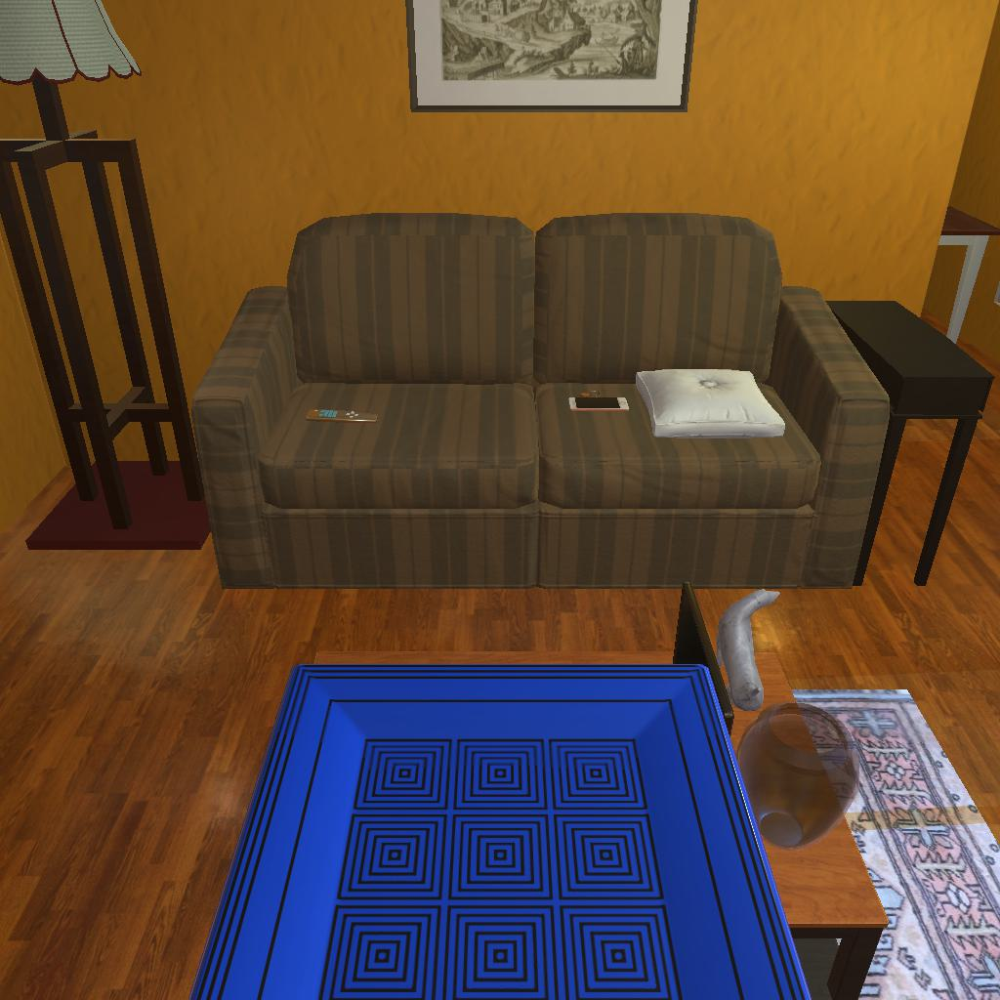

---------------------------------------------------------task: 3---------------------------------------------------------
--------------------------------------------------------------------------------------------------------------------------------------------------------------------
--------------------------------------------------------------------------------------------------------------------------------------------------------------------
Step:--------------------------------------------------------------------------10-------------------------------------------------------------------------------
----------------------------------------
VLM Prompt:
Image1:
Image2:
Image3:
**Instruction**
1. Analyze the provided images to identify all visible household objects and compare the difference between images (e.h. whether the object is opened or not and taken on hand or not), focusing on those relevant to the task description "examine the plate with the floorlamp."
2. Use the analysis of images and the task hint "The agent must find an object of the desired type, locate and turn on a light source with the desired object in-hand." to answer the question: what is the most reasonable action in the choices for the task description "examine the plate with the floorlamp"?
3. Decide and write the answer using the template: The answer is: (i): , where i is the real number. If there is no desired object in images, search every place based on **Initial Observation** to find the object. And if no one is exactly correct, choose a similar answer.
**Initial Observation**
You are in the middle of a room. Looking quickly around you, you can see armchair (1), garbagecan (1), tvstand (1), shelf (1-5), sofa (1), coffeetable (1), sidetable (1-2), drawer (1)
**Answer Choices**
(1): go to armchair 1
(2): go to garbagecan 1
(3): go to tvstand 1
(4): go to shelf 1
(5): go to shelf 2
(6): go to sofa 1
(7): go to sidetable 1
(8): go to sidetable 2
(9): go to drawer 1
(10): go to shelf 3
(11): go to shelf 4
(12): go to shelf 5
(13): put plate 1 in/on coffeetable 1
(14): examine plate 1
(15): examine coffeetable 1
**Answer**
Let's think step by step by following the instructions.
----------------------------------------
----------------------------------------
Original Response:
The task description is "examine the plate with the floorlamp." We need to find a plate and examine it in the light of the floor lamp.
From the initial observation, we know there's an armchair, garbage can, TV stand, shelves, sofa, coffee table, side tables, and a drawer in the room.
In Image 1, we see a sofa with a plate on it. The floor lamp is next to the sofa but it is not turned on. In Image 2, the plate and the floor lamp are in the same positions, and the lamp is still not turned on. Image 3 also shows the same scenario as Image 1 and 2.
Since the task is to examine the plate with the floorlamp, the most reasonable action is to first turn on the floorlamp to have a light source. However, none of the answer choices directly states "turn on the floorlamp." The closest action related to the task description is to examine the plate.
The answer is: (14): examine plate 1.
This action implies that the agent might turn on the lamp during the examination of the plate, as the task hint suggests finding a light source with the desired object in-hand. Since the plate is already on the sofa and within reach of the floor lamp, examining it is the most logical next step.
----------------------------------------
----------------------------------------
>>> Refine Original VLM Response and Get Pure Action: examine plate 1
----------------------------------------
-----------------------------------------------------------------
Running time: 16.219873428344727 seconds
Total Money: 1.21988
-----------------------------------------------------------------
-----------------------------------------------------------------
Text Observation:This is a normal plate 1
-----------------------------------------------------------------
UNSUCCEED